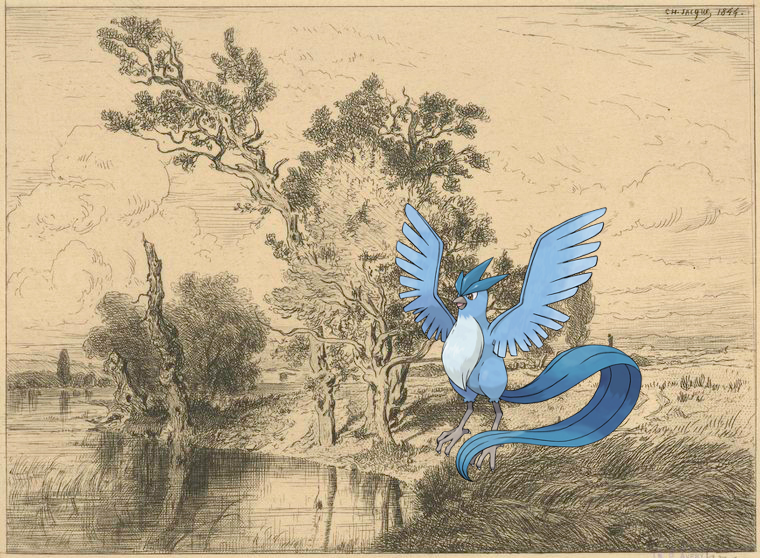
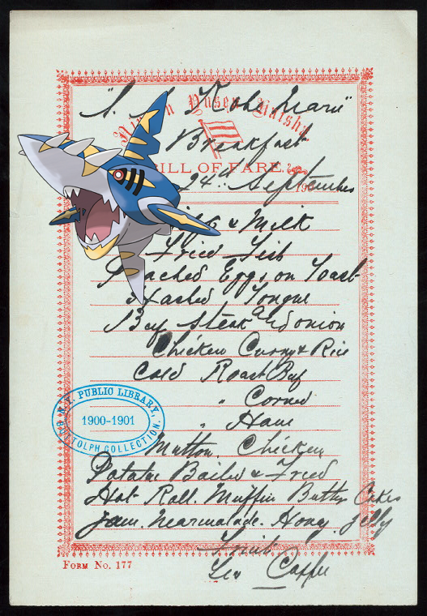

-
Dragonair | Constituent letters, 1876 December 12-19
-
Igglybuff – France, 1700-1720. Louis XIV..
-
Volbeat @ Nénuphar
-
Landorus-Incarnate ; James Duane..
-
Dusknoir on Fargo, William G.
-
Floette + Paysage.!
-
Clefable on Norway and Sweden, 1837-39.
-
Persian + Rutland [Township]
-
Dugtrio, Corphish | Letter to Mrs. George Read at Rev. William Thompson's, in Cecil County [Md.].
-
Lairon + His Excellency Jonathan Belcher..
-
Kyurem on The Lord Jeffery
-
Totodile on Document.
-
Steelix on Walliser Kanne
-
, Basculin-Red-Striped, Exeggutor @ Staten Island, V. 2, Plate No. 193 [Map bounded by New Dorp Lane, Lower New York Bay, Hett Ave.]!
-
Teddiursa, Litwick @ Edfou [Idfû]. 1. Grand temple, intérieur du pronaos; 2. Idem, idem..
-
Venonat on Denderah. Grand temple. Cour M.!
-
, Litwick + EM. 4478
-
Weedle @ It isn't very nice to ask a lady
-

-
Articuno ; Paysage.!
-
 Zygarde ; Pennsylvania Railroad!
Zygarde ; Pennsylvania Railroad! -
Camerupt + The Plaza.
-
 , Poochyena + When the harvest days are over. (Jessie dear)
, Poochyena + When the harvest days are over. (Jessie dear) -
 Porygon-Z on Habit of a Saxon in 447. Ancien Saxon.
Porygon-Z on Habit of a Saxon in 447. Ancien Saxon. -

- 
-
 , Prinplup on Hotel Astor.
, Prinplup on Hotel Astor. -
Goodra – Letter to Maj. Gen. [Benjamin] Lincoln!
-
![Buneary – Manhattan V. 7, Plate No. 63 [Map bounded by Hudson River, W. 116th St., Broadway, W. 113th St.] http://digitalcollections.nypl.org/items/209c6720-c600-012f-70fe-58d385a7bc34](media/finding-aMSnbfjk.png)
-
@ Gabor.
-
 Delibird, Elgyem @ 1903 Nov 6-1905 Apr 30
Delibird, Elgyem @ 1903 Nov 6-1905 Apr 30 -
![Camerupt, Alomomola ; New York State, Double Page Plate No. 34 [Map of Niagara, and Erie Counties]. http://digitalcollections.nypl.org/items/6e83ac20-c5f6-012f-ec3d-58d385a7bc34](media/finding-LMLgRGeL.png) Camerupt, Alomomola | New York State, Double Page Plate No. 34 [Map of Niagara, and Erie Counties].
Camerupt, Alomomola | New York State, Double Page Plate No. 34 [Map of Niagara, and Erie Counties].